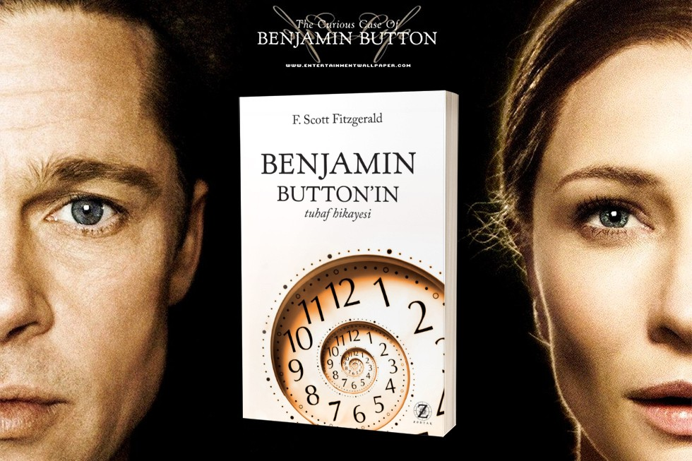

1+1
Пострадав в результате несчастного случая, богатый аристократ Филипп нанимает в помощники человека, который менее всего подходит для этой работы, – молодого жителя предместья Дрисса, только что освободившегося из тюрьмы. Несмотря на то, что Филипп прикован к инвалидному креслу, Дриссу удается привнести в размеренную жизнь аристократа дух приключений.
ПодробнееЗагадочная история Бенджамина Баттона
Фильм о мужчине, который родился в возрасте 80 лет, а затем… начал молодеть. Этот человек, как и каждый из нас, не мог остановить время. Его путь в ХХI век, берущий свое начало в Новом Орлеане в 1918 году в самом конце Первой Мировой войны, будет столь необычен, что вряд ли мог иметь место в жизни кого-либо другого. Фильм повествует о судьбе уникального человека, о людях и событиях, что ждут его впереди, о любви, которую он обретет и потеряет, о радостях жизни и грусти потерь и о том, что остается с нами вне времени.
ПодробнееБелый тигр

Вторая мировая война подходит к концу. Тяжёлые затяжные бои изматывают обе стороны. Но чем увереннее наступают советские войска, тем чаще на полях сражений появляется огромный неуязвимый немецкий танк «Белый тигр»: внезапно возникает в дыму сражений, безжалостно расстреливает противников и неожиданно исчезает. Советское командование решает для борьбы с «Белым тигром» создать особый танк — специальную модель Т-34-85.
Подробнее